In frequency modulation we modulate the frequency — "modulation" here is just a latinate word for "change". Vibrato and glissando are frequency modulation. John Chowning tells me that he stumbled on FM when he sped up vibrato to the point that it was creating audible sidebands (perceived as a timbral change) rather than faster warbling (perceived as a frequency change). We can express this (the vibrato, not the neat story) as:
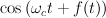where the c subscript stands for "carrier" and f(t) means "some arbitrary function added to the
carrier". Since cos takes an angle as its argument, f(t) modulates (that is, changes) the angle
passed to the cosine, hence the generic name "angle modulation". We can add that change either to
the argument to cos
("phase modulation", cos(angle + change)), or add it to the current phase, then take cos of that
("frequency modulation", cos(angle += change)), so
our formula can viewed either way. Since the angle is being incremented by the carrier frequency in
either case, the difference is between:
PM: cos((angle += incr) + change) FM: cos(angle += (incr + change))
To make the difference clear, textbooks put in an integral when they mean frequency modulation:
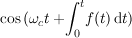In PM we change the phase, in FM we change the phase increment, and to go from FM to PM, integrate the FM modulating signal. But you can't tell which is in use from the output waveform; you have to know what the modulating signal is. In sound synthesis, where we can do what we want with the modulating signal, there is no essential difference between frequency and phase modulation.
I would call this issue a dead horse, but it is still causing confusion, even 40 years down the road. So, here are two CLM instruments, one performing phase modulation, the other performing frequency modulation. I have tried to make the innards explicit at each step, and match the indices so that the instruments produce the same results given the same parameters. Also, to lay a different controversy to rest, it should be obvious from these two functions that there is no difference in run-time computational expense or accuracy.
(define (pm beg end freq amp mc-ratio index) ; "mc-ratio" = modulator to carrier frequency ratio
(let ((carrier-phase 0.0) ; set to pi/2 if someone tells you PM can't produce energy at 0Hz
(carrier-phase-incr (hz->radians freq))
(modulator-phase 0.0)
(modulator-phase-incr (hz->radians (* mc-ratio freq))))
(do ((i beg (+ i 1)))
((= i end))
(let* ((modulation (* index (sin modulator-phase)))
(pm-val (* amp (sin (+ carrier-phase modulation)))))
;; no integration in phase modulation
(set! carrier-phase (+ carrier-phase carrier-phase-incr))
(set! modulator-phase (+ modulator-phase modulator-phase-incr))
(outa i pm-val)))))
(define (fm beg end freq amp mc-ratio index)
(let* ((carrier-phase 0.0)
(carrier-phase-incr (hz->radians freq))
(modulator-phase-incr (hz->radians (* mc-ratio freq)))
(modulator-phase (* 0.5 (+ pi modulator-phase-incr)))
;; (pi+incr)/2 to get (centered) sin after integration, to match pm case above
(fm-index (hz->radians (* mc-ratio freq index))))
;; fix up fm index (it's a frequency change)
(do ((i beg (+ i 1)))
((= i end))
(let ((modulation (* fm-index (sin modulator-phase)))
(fm-val (* amp (sin carrier-phase))))
(set! carrier-phase (+ carrier-phase modulation carrier-phase-incr))
(set! modulator-phase (+ modulator-phase modulator-phase-incr))
(outb i fm-val)))))
(with-sound (:channels 2)
(pm 0 10000 1000 .5 0.25 4)
(fm 0 10000 1000 .5 0.25 4))
(with-sound (:channels 2)
(pm 0 10000 1000 .5 0.5 10)
(fm 0 10000 1000 .5 0.5 10))
Given our formula for FM, let's assume, for starters, that f(t) is a sinusoid:
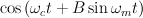where the "m" stands for "modulator" and the "B" factor is usually called the modulation index. The corresponding CLM code is:
(oscil carrier (* B (oscil modulator)))
where oscil is (essentially):
(define* (oscil oscillator (fm-input 0.0) (pm-input 0.0))
(let ((result (sin (+ oscillator-phase pm-input))))
(set! oscillator-phase (+ oscillator-phase (+ oscillator-phase-increment fm-input)))
result))
Since it is generally believed that the ear performs some sort of projection of the time domain waveform into the frequency domain (a Fourier Transform), and that timbre is at least partly a matter of the mix of frequencies present (the spectrum), our main interest in the FM formula is in the spectrum it produces. To determine that spectrum, we have to endure some tedious mathematics. By the trigonometric identity:
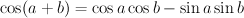we can substitute 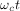 for "a" and 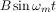 for "b" and get:
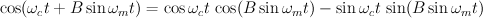If we can get a Fourier transform of the two inner portions:
 and
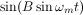, we can use:
and
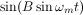, we can use:
to get the final results. "A" here is
in the earlier formulas, and "B" is either
or
.
The Fourier transform we want is not obvious to us (not to me, certainly!), so we go to Abramowitz and Stegun,
"Handbook of Mathematical Functions" and find (formulas 9.1.42 and 9.1.43):
|
Here the J's refer to the Bessel functions which we will return to later. First, let's finish this expansion; we take these two sums and and plug them into our first expansion of the FM formula, and out pops: 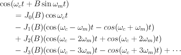or in a slightly more compact form: 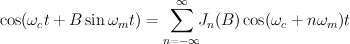Here we are using the fact that 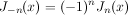. We can change our point of view on the first part of the expansion given above, and ask for the amplitude of a given sideband: 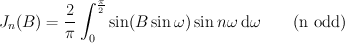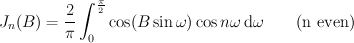 We end up with a spectrum made up of a "carrier" at and symmetrically placed sidebands separated by . The amplitudes follow the Bessel functions. I put carrier in quotes because in computer music we listen to the result of the modulation (this was Chowning's idea — see "The Synthesis of Complex Audio Spectra by Means of Frequency Modulation"). The Bessel functions are nearly 0 until the index (B) equals the order (n). Then they have a bump and tail off as a sort of damped sinusoid: |
|
As the index sweeps upward, energy is swept gradually outward into higher order side bands; this is the originally exciting, now extremely annoying "FM sweep". The important thing to get from these Bessel functions is that the higher the index, the more dispersed the spectral energy — normally a brighter sound.
| carrier=1000, mod=100, index=1.0 | carrier=1000, mod=100, index=2.0 | carrier=1000, mod=100, index=3.0 |
| 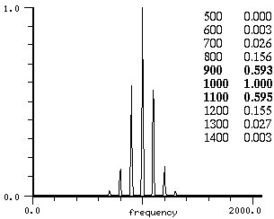 | 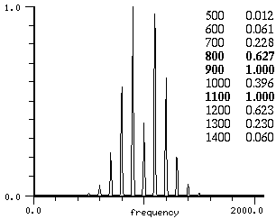 | 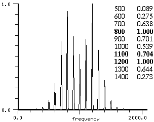 |
J0(1.0) = 0.765 -> 1.0 (*) J1(1.0) = 0.440 -> 0.575 J2(1.0) = 0.115 -> 0.150 J3(1.0) = 0.019 -> 0.025 J4(1.0) = 0.002 -> 0.003 (* Jn values normalized to match the peak values given above) |
J0(2.0) = 0.224 -> 0.388 (*) J1(2.0) = 0.577 -> 1.0 J2(2.0) = 0.353 -> 0.611 J3(2.0) = 0.129 -> 0.223 J4(2.0) = 0.034 -> 0.058 J5(2.0) = 0.007 -> 0.012 J6(2.0) = 0.001 -> 0.002(A larger FFT reduces the mismatch) |
J0(3.0) = -0.260 -> -0.534 (*) J1(3.0) = 0.339 -> 0.697 J2(3.0) = 0.486 -> 1.0 J3(3.0) = 0.309 -> 0.635 J4(3.0) = 0.132 -> 0.271 J5(3.0) = 0.043 -> 0.088 J6(3.0) = 0.011 -> 0.023 |
There is a rule of thumb, Mr Carson's rule, about the overall bandwidth of the resultant spectrum (it follows from our description of the Bessel functions): Roughly speaking, there are fm-index+1 significant sidebands on each side of the carrier, so our total bandwidth is more or less
2 * modulator-frequency * (fm-index + 1)
This is a good approximation — 99% of the signal power is within its limits. To turn that around, we can reduce the danger of aliasing by limiting the FM index to approximately (srate/2 - carrier_frequency) / modulator_frequency; use srate/4 to be safer. (Mr Carson's opinion of FM: "this method of modulation inherently distorts without any compensating advantages whatsoever").
One hidden aspect of the FM expansion is that it produces a time domain waveform that is not "spikey". If we add cosines at the amplitudes given by the Bessel functions (using additive synthesis to produce the same magnitude spectrum as FM produces), we get a very different waveform. Doesn't the FM version sound richer and, far more importantly, louder?
| 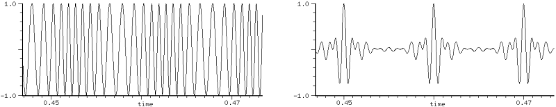 |
| FM waveform (index: 3.0) vs sum of cosines with the same (relative) component amplitudes |
From one point of view (looking at FM as changing the phase passed to the sin function), it's obvious that the output waveform should be this well behaved, but looking at it from its components, it strikes me as a minor miracle that there is a set of amplitudes (courtesy of the Bessel functions) that fits together so perfectly. Here is an attempt to graph the 15 main components, with their sum in black:
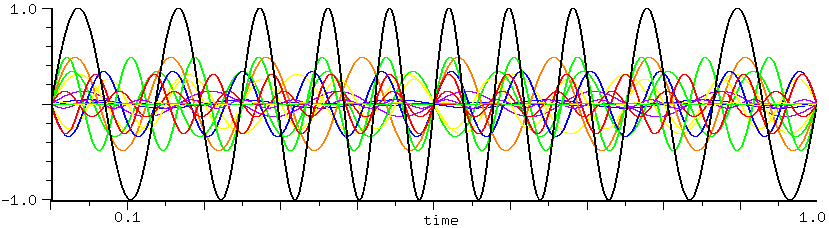| Then there's the perennial question "why Bessel functions?". Most explanations start with 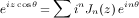: obscurum per obscurius! A different tack might be to start with 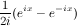, a definition of sine, and call the "e^(ix)" terms "t", then cos(sin) involves terms like 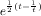, which is one (convoluted) way to define Bessel functions. Or perhaps most forthright, start with the formula for Jn(B) given above (the integral), and say "we want cos(sin) expanded as a sum of cosines, and we define Jn to be the nth coefficient in that sum". This was the approach of Bessel and other 19th century mathematicians, but it is not very satisfying for some reason. Perhaps history can help? These functions were studied by Daniel Bernoulli (the vibrations of a heavy chain, 1738), Euler (the vibrations of a membrane, 1764), Lagrange (planetary motion, 1770), and Fourier (the motion of heat in a cylinder, 1822); Bessel studied them in the context of Kepler's equation, and wrote a monograph about them in 1824. For an explanation of the connection between planetary motion and FM, see Benson, "Music: A Mathematical Offering". Just for completeness, here's a derivation following Gray and Mathews, "A Treatise on Bessel Functions": 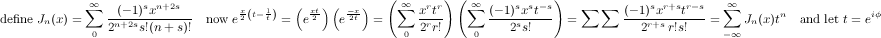 |
Here's a simple FM instrument:
(define* (fm beg dur freq amp mc-ratio index (index-env '(0 1 100 1)))
(let* ((start (seconds->samples beg))
(end (+ start (seconds->samples dur)))
(cr (make-oscil freq))
(md (make-oscil (* freq mc-ratio)))
(fm-index (hz->radians (* index mc-ratio freq)))
(ampf (make-env index-env :scaler amp :duration dur))
(indf (make-env index-env :scaler fm-index :duration dur)))
(do ((i start (+ i 1)))
((= i end))
(outa i (* (env ampf) ; amplitude env
(oscil cr (* (env indf) ; carrier + modulation env
(oscil md)))))))) ; modulation
I put an envelope on the fm-index ("indf" above) to try out dynamic spectra ("dynamic" means "changing" here). For now, don't worry too much about the actual side band amplitudes. They will not always match Chowning's description, but we'll get around to an explanation eventually.
(with-sound () (fm 0 1.0 100 .5 1.0 4.0))
is Chowning's first example. Sure enough, it's a complex spectrum (that is, it has lots of components; try an index of 0 to hear a sine wave, if you're suspicious). Since our modulating frequency to carrier frequency ratio (mc-ratio above) is 1.0, we get sidebands at harmonics of the carrier. If we use an mc-ratio of .25 and a carrier of 400:
(with-sound () (fm 0 1.0 400 .5 0.25 4.0))
we end up with the same perceived pitch because the sidebands are still at multiples of 100 Hz.
(with-sound () (fm 0 1.0 400 .5 1.1414 4.0))
has inharmonic sidebands. Most real sounds seem to change over the course of a note, and it was at one time thought that most of this change was spectral. To get a changing spectrum, we need only put an envelope on the fm-index:
(with-sound () (fm 0 0.5 400 .5 1.0 5.0 '(0 0 20 1 40 .6 90 .5 100 0)))
making a brass-like sound. Similarly, Chowning suggests that
(with-sound () (fm 0 1.0 900 .5 1/3 2.0 '(0 0 6 .5 10 1 90 1 100 0)))
is a woodwind-like tone,
(with-sound () (fm 0 1.0 500 .5 .2 1.5 '(0 0 6 .5 10 1 90 1 100 0)))
is bassoon-like, and finally
(with-sound () (fm 0 1.0 900 .5 2/3 2 '(0 0 25 1 75 1 100 0)))
is clarinet-like. Now start at 2000 Hz, set the mc-ratio to .1, and sweep the FM index from 0 to 10, and the spectrogram looks like this:
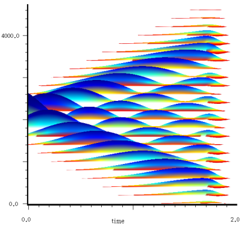There is a lot of music in simple FM. You get a full spectrum at little computational expense, and the index gives you a simple and intuitive way to change that spectrum. Since the output peak amplitude is not affected by the modulating signal (cos(x) is between -1 and 1 no matter what x is, as long as it is real), we can wrench the index around with wild abandon. And since the number of significant components in the spectrum is nearly proportional to the index (Carson's rule), we can usually predict more or less what index we want for a given spectral result.
|
A slightly bizarre sidelight: there's no law against a modulating signal made up of complex numbers. In this case, cos is no longer bounded, so the output can peak at anything, but we still get FM-like spectra. 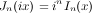, where "I" is the modified Bessel function, so if our index is purely imaginary, we can expand cos(wc + bi sin wm)t as 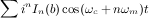If our index is a + bi, we get 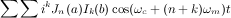This looks similar to normal FM, but with normalization headaches. Perhaps we can take advantage of the split betweeen the real and imaginary parts — unexplored territory! | ||
|
I am getting carried away — we need to back up a bit and clear up one source of confusion. If you looked at the spectrum of our first example, and compared it to the spectrum Chowning works out, you may wonder what's gone awry. We have to return to our initial set of formulas. If we consider that:
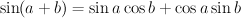and using our previous formulas for the expansion of the cos(sin) and sin(sin) terms, with the identity:
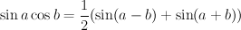we see that we still have a spectrum symmetric around the carrier, and the amplitude and frequencies are just as they were before, but the initial phases of the side bands have changed. Our result is now
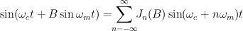This is Chowning's version of the expansion. In general:
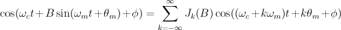Our first reaction is, "well so what if one's a sine and the other's a cosine — they'll sound the
same", but we are being hasty. What if (for example), the modulator has the same frequency as the
carrier, and its index (B) is high enough that some significant energy appears at
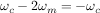?
Where does energy at a negative frequency go? We once again fall back on
trigonometry:  ,
but 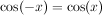,
so the negative frequency component adds to the positive frequency component if it's a cosine, but
subtracts if it's a sine. We get a different
pattern of cancellations depending on the initial phases of the carrier and modulator. Take the CLM
instrument:
,
but 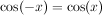,
so the negative frequency component adds to the positive frequency component if it's a cosine, but
subtracts if it's a sine. We get a different
pattern of cancellations depending on the initial phases of the carrier and modulator. Take the CLM
instrument:
(define (pm beg dur freq amp fm-index mod-phase)
(let* ((start (seconds->samples beg))
(end (+ start (seconds->samples dur)))
(cr (make-oscil freq))
(md (make-oscil freq mod-phase)))
(do ((i start (+ i 1)))
((= i end))
(outa i (* amp (oscil cr 0.0
(* fm-index (oscil md))))))))
(with-sound () (pm 0 1.0 100 .5 8 0))
(with-sound () (pm 0 1.0 100 .5 8 (* .5 pi)))
| 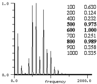 | 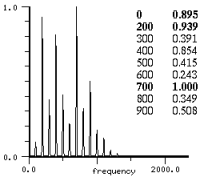 |
| mod phase = 0.0 | mod phase = pi/2 |
There is a slight difference! We're using phase-modulation for simplicity (the integration in FM changes the effective initial phase). By varying the relative phases, we can get a changing spectrum from these cancellations. Here is a CLM instrument that shows this (subtle) effect:
(define (fm beg dur freq amp mc-ratio index)
(let* ((start (seconds->samples beg))
(end (+ start (seconds->samples dur)))
(cr (make-oscil freq))
(md (make-oscil (* freq mc-ratio)))
(skewf (make-env (list 0.0 0.0 1.0 pi) :duration dur)))
(do ((i start (+ i 1)))
((= i end))
(outa i (* amp (oscil cr 0.0 (* index (oscil md 0.0 (env skewf)))))))))
(with-sound () (fm 0 2 100 0.5 1.0 30.0))
The next question is "if we can get cancellations, can we fiddle with the phases and get asymmetric FM spectra?". There are several approaches; an obvious one uses the fact that:
If we have a spectrum B made up entirely of sines (or entirely cosines), we can multiply it by sin A (or cos A), add the two resulting spectra, and the (A + B) parts cancel. Unfortunately, in this case there are some pesky -1's floating around, so we get asymmetric or gapped spectra, but not anything we'd claim was single side-band.
(define (pm-cancellation beg dur carfreq modfreq amp index)
(let* ((cx 0.0)
(mx 0.0)
(car-incr (hz->radians carfreq))
(mod-incr (hz->radians modfreq))
(start (seconds->samples beg))
(stop (+ start (seconds->samples dur))))
(do ((i start (+ i 1)))
((= i stop))
(outa i (* amp (- (* (cos cx) ; cos * sum-of-cos
(sin (* index (cos mx))))
(* (sin cx) ; sin * sum-of-sin
(* (sin (* index (sin mx))))))))
(set! cx (+ cx car-incr))
(set! mx (+ mx mod-incr)))))
(with-sound () (pm-cancellation 0 1 1000.0 100.0 0.3 9.0))
| 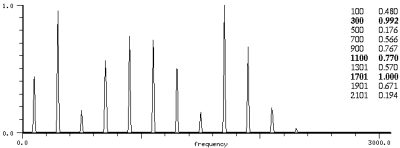 |
| cos side by itself |
| 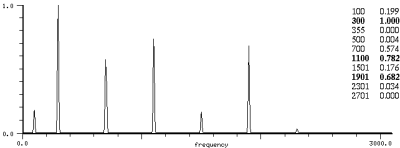 |
| both sides (showing cancellations) |
I really like the sounds you get from this cancellation; I can't resist adding the following examples which come from a collection of "imaginary machines":
(definstrument (machine1 beg dur cfreq mfreq amp index gliss)
(let* ((gen (make-fmssb cfreq mfreq :index 1.0)) ; defined in generators.scm
(start (seconds->samples beg))
(stop (+ start (seconds->samples dur)))
(ampf (make-env '(0 0 1 .75 2 1 3 .1 4 .7 5 1 6 .8 100 0) :base 32 :scaler amp :duration dur))
(indf (make-env '(0 0 1 1 3 0) :duration dur :base 32 :scaler index))
(frqf (make-env (if (> gliss 0.0) '(0 0 1 1) '(0 1 1 0))
:duration dur :scaler (hz->radians (abs gliss)))))
(do ((i start (+ i 1)))
((= i stop))
(set! (fmssb-index gen) (env indf))
(outa i (* (env ampf) (fmssb gen (env frqf)))))))
(with-sound (:play #t)
(do ((i 0.0 (+ i .2)))
((>= i 2.0))
(machine1 i .3 100 540 0.5 4.0 0.0)
(machine1 (+ i .1) .3 200 540 0.5 3.0 0.0))
(do ((i 0.0 (+ i .6)))
((>= i 2.0))
(machine1 i .3 1000 540 0.5 6.0 0.0)
(machine1 (+ i .1) .1 2000 540 0.5 1.0 0.0)))
(with-sound (:scaled-to .5 :play #t)
(let ((gen (make-rkoddssb 1000.0 2000.0 0.875)) ; defined in generators.scm
(noi (make-rand 15000 .04))
(gen1 (make-rkoddssb 100.0 10.0 0.9))
(ampf (make-env '(0 0 1 1 11 1 12 0) :duration 11.0 :scaler .5))
(frqf (make-env '(0 0 1 1 2 0 10 0 11 1 12 0 20 0) :duration 11.0 :scaler (hz->radians 1.0))))
(do ((i 0 (+ i 1)))
((= i (* 12 44100)))
(outa i (* (env ampf)
(+ (rkoddssb gen1 (env frqf))
(* .2 (sin (rkoddssb gen (rand noi)))))))))
(do ((i 0.0 (+ i 2)))
((>= i 10.0))
(machine1 i 3 100 700 0.5 4.0 0.0)
(machine1 (+ i 1) 3 200 700 0.5 3.0 0.0))
(do ((i 0.0 (+ i 6)))
((>= i 10.0))
(machine1 i 3 1000 540 0.5 6.0 0.0)
(machine1 (+ i 1) 1 2000 540 0.5 1.0 0.0)))
A different approach, also using a form of amplitude modulation, is mentioned by Moorer in "Signal Processing Aspects of Computer Music":
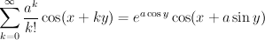This is the rxyk!cos generator in generators.scm. It produces beautiful single-sided spectra. We might grumble that the sideband amplitudes don't leave us much room for maneuver, but the factorial in the denominator overwhelms any exponential in the numerator, so we can get many interesting effects: moving formants, for example.
| 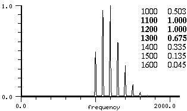 |
| a: 2, x:1000, y: 100 |
Palamin et al in "A Method of Generating and Controlling Musical Asymmetrical Spectra" came up with a slightly more complicated version:
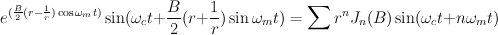But the peak amplitude of this formula is hard to predict; we'd rather have a sum of cosines:
so we can use
to normalize the output to -1.0 to 1.0. The spectrum produced for a given "r" is mirrored by -1/r (remembering that ).
(with-sound ()
(let ((gen (make-asymmetric-fm 2000.0 :ratio .2 :r 0.5)))
(do ((i 0 (+ i 1)))
((= i 20000))
(outa i (asymmetric-fm gen 2.0)))))
We can put an envelope on either the index or "r"; the index affects how broad the spectrum is, and "r" affects its placement relative to the carrier (giving the effect of a moving formant). Here we sweep "r" from -1.0 to -20.0, with an index of 3, m/c ratio of .2, and carrier at 1000 Hz:
So far we have been using just a sinusoid for the modulator; what if we make it a more complicated signal? Here again trigonometry can be used to expand
The modulating signal is now made up of two sinusoids (don't despair; this is a terminating sequence). Since sine is not linear (it is ), this is not the same thing as
In the second case we just add together the two simple FM spectra, but in the first case we get a more complex mixture involving all the sums and differences of the modulating frequencies. These sum and difference tones ("intermodulation products") are not limited to FM. Any nonlinear synthesis technique produces them. Being non-linear, it must have something that involves a power of its input other than 0 or 1; if we feed in sin a + sin b, for example, that term will produce not just (sin a)^n and (sin b)^n, but all sorts of stuff involving sin a * sin b (in various powers), and this produces things like cos(a+b) and cos(a-b). For a less impressionistic derivation of the spectrum, see Le Brun, "A Derivation of the Spectrum of FM with a Complex Modulating Wave". The result can be expressed:
You can chew up any amount of free time calculating the resulting side band amplitudes — see the immortal classic: Schottstaedt, "The Simulation of Natural Instrument Tones Using Frequency Modulation with a Complex Modulating Wave". (There's a function to do it for you in dsp.scm: fm-parallel-component). In simple cases, the extra modulating components flatten and spread out the spectrum somewhat (see below and ncos for discussions of very different not-so-simple cases). In general:
A CLM instrument to produce this is:
(define (fm beg dur freq amp mc-ratios indexes carrier-phase mod-phases)
(let* ((start (seconds->samples beg))
(end (+ start (seconds->samples dur)))
(cr (make-oscil freq carrier-phase))
(n (length mc-ratios))
(modulators (make-vector n))
(fm-indices (make-vct n)))
(do ((i 0 (+ i 1)))
((= i n))
(set! (modulators i) (make-oscil (* freq (mc-ratios i)) (mod-phases i)))
(set! (fm-indices i) (hz->radians (* freq (indexes i) (mc-ratios i)))))
(do ((i start (+ i 1)))
((= i end))
(let ((sum 0.0))
(do ((k 0 (+ k 1)))
((= k n))
(set! sum (+ sum (* (fm-indices k) (oscil (modulators k))))))
(outa i (* amp (oscil cr sum)))))))
(with-sound () (fm 0 2.0 440 .3 '(1 3 4) '(1.0 0.5 0.1) 0.0 '(0.0 0.0 0.0)))
200Hz is -0.106 (i = -1, k = -1)
-0.106 (i = -1, k = 1)
-0.213 -> 0.306 normalized
2000Hz: -0.023 (i = -2, k = 0)
0.718 (i = 0, k = 0)
0.695 -> 1.0 normalized
1800Hz: -0.013 (i = -2, k = 1)
-0.413 (i = 0, k = -1)
-0.426 -> 0.614 normalized
i is the 2000 Hz part, k the 200 Hz, red dots mark pure sum/difference tones | |
| (with-sound () (fm 0 2.0 2000 .5 '(1 .1) '(0.5 1.0) 0.0 '(1.855 1.599))) | |
My favorite computer instrument, the FM violin, uses three sinusoidal components in the modulating wave; for more complex spectra these violins are then ganged together (see fmviolin.clm for many examples). By using a few sines in the modulator, you get away from the simple FM index sweep that has become tiresome, and the broader, flatter spectrum is somewhat closer to that of a real violin. A pared down version of the fm-violin is:
(define (violin beg dur frequency amplitude fm-index)
(let* ((start (seconds->samples beg))
(end (+ start (seconds->samples dur)))
(frq-scl (hz->radians frequency))
(maxdev (* frq-scl fm-index))
(index1 (* maxdev (/ 5.0 (log frequency))))
(index2 (* maxdev 3.0 (/ (- 8.5 (log frequency)) (+ 3.0 (/ frequency 1000)))))
(index3 (* maxdev (/ 4.0 (sqrt frequency))))
(carrier (make-oscil frequency))
(fmosc1 (make-oscil frequency))
(fmosc2 (make-oscil (* 3 frequency)))
(fmosc3 (make-oscil (* 4 frequency)))
(ampf (make-env '(0 0 25 1 75 1 100 0) :scaler amplitude :duration dur))
(indf1 (make-env '(0 1 25 .4 75 .6 100 0) :scaler index1 :duration dur))
(indf2 (make-env '(0 1 25 .4 75 .6 100 0) :scaler index2 :duration dur))
(indf3 (make-env '(0 1 25 .4 75 .6 100 0) :scaler index3 :duration dur))
(pervib (make-triangle-wave 5 :amplitude (* .0025 frq-scl)))
(ranvib (make-rand-interp 16 :amplitude (* .005 frq-scl))))
(do ((i start (+ i 1)))
((= i end))
(let ((vib (+ (triangle-wave pervib) (rand-interp ranvib))))
(outa i (* (env ampf)
(oscil carrier
(+ vib
(* (env indf1) (oscil fmosc1 vib))
(* (env indf2) (oscil fmosc2 (* 3.0 vib)))
(* (env indf3) (oscil fmosc3 (* 4.0 vib)))))))))))
(with-sound () (violin 0 1.0 440 .1 1.0))
There is one surprising aspect of the parallel FM equation. Since we can fiddle with the initial phases of the modulating signal's components, we can get very different spectra from modulating signals with the same magnitude spectrum. In the next two graphs, both cases involve a modulating signal made up of 6 equal amplitude harmonically related sinusoids, but the first uses all cosines, and the second uses a set of initial phases that minimizes the modulating signal's peak amplitude:
We can, of course, use FM (or anything) to produce the modulating signal. When FM is used, it is sometimes called "cascade FM":
In CLM:
(* A (oscil carrier (* B (oscil modulator (* C (oscil cascade))))))
Each component of the lower pair of oscillators is surrounded by the spectrum produced by the upper pair, sort of like a set of formant regions.
| osc A: 2000 Hz, osc B: 500 Hz, index 1.5, osc C: 50 Hz, index 1.0 |
The resemblance of cascade FM to parallel FM is not an accident:
Unfortunately, FM and PM can produce energy at 0Hz (when, for example, the carrier frequency equals the modulating frequency), and in FM that 0Hz component becomes a constant offset in the phase increment (the "instantaneous frequency") of the outer or lowermost carrier. Our fundamental frequency no longer has any obvious relation to ! That is, we can expand our cascade formula (in the sin(x + cos(sin)) case) into:

but now whenever the
, we get
,
and the carrier is offset by (radians->hz (bes-jn B)), that is, (Jn(B) * srate / (2 * pi)).
For example, if we have (oscil gen 0.05), where we've omitted everything except
the constant (DC) term (0.05 in this case), this oscil produces a sine wave at its nominal frequency + (radians->hz 0.05),
an offset of about 351 Hz at a 44100 Hz sampling rate.
This extra offset could be a disaster, because
in most cases where we care about the perceived fundamental, we are trying to create harmonic
spectra, and that is harder if our modulator/carrier ratio depends on the current FM index.
If you are using low indices and the top pair's
mc-ratios are below 1.0 (in vibrato, for example), you have a good chance of getting usable results.
If you want cascade FM to work in other situations, make sure the top oscil has an initial phase of
(pi + mod-incr)/2. The middle FM spectrum will then have only sines (not cosines), so the DC component
will be thoroughly discouraged. Or use phase modulation instead; in that case, we
have effectively (oscil gen 0.0 0.05), which has no effect on the pitch, but offsets the
phase by a constant (0.05), usually not a big deal.
The irascible reader may be grumbling about angels and pins, so here's an example of cascade FM to show how strong this effect is:
(define (cascade beg dur freq amp modrat modind casrat casind caspha)
(let* ((start (seconds->samples beg))
(end (+ start (seconds->samples dur)))
(cr (make-oscil freq))
(md (make-oscil (* freq modrat)))
(ca (make-oscil (* freq casrat) caspha))
(fm-ind0 (hz->radians (* modind modrat freq)))
(fm-ind1 (hz->radians (* casind casrat freq))))
(do ((i start (+ i 1)))
((= i end))
(outa i (* amp
(oscil cr (* fm-ind0
(oscil md (* fm-ind1
(oscil ca))))))))))
(with-sound ()
(cascade 0 1.0 400 .25 1.0 1.0 1.0 1.0 0)
(cascade 1.5 1.0 400 .25 1.0 1.0 1.0 1.0 (* .5 pi)))
;;; clean it up by using the no-DC initial phase:
(with-sound ()
(cascade 0 1.0 400 .25 1 1.0 1 1.0 (* 0.5 (+ pi (hz->radians 400)))))
Why stop at three sins? Here's an experiment that calls sin(sin(sin...)) k times; it seems to be approaching a square wave as k heads into the stratosphere:

|
||
| k=3 | k=30 | k=300 |
If we use "cos" here instead of "sin", we get a constant, as Bill Gosper has shown:
As z increases above 1.27, we get a square wave, then period doubling, and finally (ca. 1.97) chaos.
A similar trick comes up in feedback FM used in some synthesizers. Here the output of the modulator is fed back into its input:
sin(y <= w + B sin y)
This is expanded by Tomisawa as:
As Tomisawa points out, this is very close to the other FM formulas, except that the argument to the Bessel function depends on the order, we have only multiples of the carrier frequency in the expansion, and the elements of the sequence are multiplied by 2/nB. The result is a much broader, flatter spectrum than you normally get from FM. If you just push the index up in normal FM, the energy is pushed outward in a lumpy sort of fashion, not evenly spread across the spectrum. In effect we've turned the axis of the Bessel functions so that the higher order functions start at nearly the same time as the lower order functions. The new function Jn(nB) decreases (very!) gradually. For example if the index (B) is 1:
Since the other part of the equation goes down as 1/n, we get essentially a sawtooth wave out of this equation (its harmonics go down as 1/n). Tomisawa suggests that B should be between 0 and 1.5. Since we are dividing by B in the equation, we might worry that as B heads toward 0, all hell breaks loose, but luckily
and for all the other components
so, just as in normal FM, if the index is 0, we get a pure sine wave.
(define (feedbk beg dur freq amp index)
(let* ((start (seconds->samples beg))
(end (+ start (seconds->samples dur)))
(y 0.0)
(x-incr (hz->radians freq)))
(do ((i start (+ i 1))
(x 0.0 (+ x x-incr)))
((= i end))
(set! y (+ x (* index (sin y))))
(outa i (* amp (sin y))))))
(with-sound () (feedbk 0 1 100.0 1.0 1.0))
2/1 J1(1) = 0.880 -> 1.000 (normalized to match fft) 2/2 J2(2) = 0.353 -> 0.401 2/3 J3(3) = 0.206 -> 0.234 2/4 J4(4) = 0.141 -> 0.159 2/5 J5(5) = 0.104 -> 0.118 2/6 J6(6) = 0.082 -> 0.093 2/7 J7(7) = 0.066 -> 0.076 |
Why does the FFT show a 0 Hz component?
Increasing the sampling rate, or decreasing the carrier frequency reduces this component without
affecting the others, but low-pass filtering the output does not affect it (so it's unlikely
to be an artifact of aliasing which is a real problem in feedback FM). Change the sine to
cosine in (* amp (sin y)) and suddenly there's a ton of DC. Fiddle with the
initial phase in that line, and there's always some choice that reduces it to 0.0.
Groan — it appears to be another "centering" problem, but I haven't found
the magic formula yet (a reasonable stab at it is: -(phase-incr^(1-(B/3)))).
| Tomisawa's picture of the noise |
Why does an index over 1.0 create bursts of noise? Each burst happens as the modulator phase goes through an odd multiple of pi (where sine is going negative as the phase increases). Since the index (B) is high enough, the change between successive samples in (B * sin(y)) is eventually greater in magnitude than the phase increment. When that happens on the downslope of the sine curve, B * sin(y) + phase-increment (our overall phase increment) is so much more negative on the current sample than the previous one that the phase actually backs up. (This is confusing to analyze because at this point in the curve, the feedback is already holding the phase back, so we need to reach a point where the increase in the backup overwhelms the increment on that sample, thereby backing up the overall phase beyond its previous held back value). So the modulator phase backs into the less negative part of the sine curve: our next y value is less negative (it can even be positive)! But now B * sin(y) is also less negative, so the phase increment lurches us forward, and y is now even more negative. We've started to zig-zag down the sine curve. Depending on the index, this bouncing can reach any amplitude, and start anywhere after the high point of the curve. Eventually, the sine slope lessens (as it reaches its bottom), the overall phase catches up, and the bouncing stops for that cycle. The noise is not chaos (in the sense of period doubling), or an error in the computation. Our largest safe index is increment/sin(increment) which is just over 1.0. If we change the code to make sure the carrier phase doesn't back up, the bursts go away until the index reaches about 1.4, then we start to zigzag at the zero crossing. The take-home message is: "keep the index below 1.0!".
One way to make noise (deliberately) with FM is to increase the index until massive aliasing is taking place. A more controllable approach is to use a random number generator as our modulator. In this case, the power spectral density of the output has the same form as the value distribution function (amplitude distribution as opposed to frequency) of the modulating noise, centered around the carrier. The bandwidth of the result is about 4 times the peak deviation (the random number frequency times its index — is this just Mr Carson again?):
(with-sound ()
(let ((gen (make-oscil 5000))
(noise (make-rand 1000 :envelope '(-1 1 0 0 1 1))) ; "eared"
(index (hz->radians 1000))) ; index=1.0 so bandwith=4 Khz (2 Khz on each side)
(do ((i 0 (+ i 1)))
((= i 50000))
(outa i (oscil gen (* index (rand noise)))))))
| ||
| flat | gaussian (bell curve) | eared |
Simple FM with noise gives both whooshing sounds (high index) and hissing or whistling sounds (low index), useful for Oceanic Music, but more subtle kinds of noise can be hard to reach. Heinrich Taube had the inspired idea of feeding the noise (as a sort of cascade FM) into the parallel modulators of an fm-flute, but not into the carrier. The modulating signal becomes a sum of two or three narrow band noises (narrow because normally the amplitude of the noise is low), and these modulate the carrier. In CLM:
(oscil carrier (* fm-index (oscil fm (* noise-index (rand noise)))))
You may have noticed that this is one case where phase modulation is different from FM. Previously, we could fix up each modulating sinusoid (both in amplitude and initial phase), but here we have no such handles on the components of the incoming signal. If someone insists, we can still match outputs by integrating the modulating signal: FM(white-noise) = PM(brownian-noise). Similarly, FM(square-wave) = PM(triangle-wave), FM(nxy1sin) = PM(square-wave), and FM(e^x) = PM(e^x). FM(square-wave) is:
.In the realm of "anything" as the modulating signal, consider
(sin (+ sound-file (* index (sin (* 2 pi sound-file)))))
where "sound file" is any recorded sound. I call this "contrast-enhancement" in the CLM package. It makes a sound crisper; "Wait for Me!" uses it whenever a sound needs to cut through a huge mix.
We can use more than one sinusoidal component in our carrier, or multiple banks of carriers and modulators, and depend upon vibrato and "spectral fusion" to make the result sound like one voice. In this cross between additive synthesis (the multiple carriers) and FM (the formant centered on each carrier), we get around many of the limitations of the Bessel functions. There are numerous examples in fmviolin.clm. One of the raspier versions of the fm-violin used a sawtooth wave as the carrier, and some sci-fi sound effects use triangle waves as both carrier and modulator. See generators.scm for many other FM-inspired synthesis techniques, including J0(B sin x): "Bessel FM". An elaborate multi-carrier FM instrument is the voice instrument written by Marc Le Brun, used in "Colony" and other pieces:
(define* (vox beg dur freq amp (indexes '(.005 .01 .02)) (formant-amps '(.86 .13 .01)))
(let* ((start (seconds->samples beg))
(end (+ start (seconds->samples dur)))
(car-os (make-oscil 0))
(evens (make-vector 3))
(odds (make-vector 3))
(amps (apply vct formant-amps))
(ampf (make-env '(0 0 25 1 75 1 100 0) :scaler amp :duration dur))
(frmfs (make-vector 3))
(indices (apply vct indexes))
(per-vib (make-triangle-wave 6 :amplitude (* freq .03)))
(ran-vib (make-rand-interp 20 :amplitude (* freq .5 .02))))
(do ((i 0 (+ i 1)))
((= i 3))
(set! (evens i) (make-oscil 0))
(set! (odds i) (make-oscil 0)))
(set! (frmfs 0) (make-env '(0 520 100 490) :duration dur))
(set! (frmfs 1) (make-env '(0 1190 100 1350) :duration dur))
(set! (frmfs 2) (make-env '(0 2390 100 1690) :duration dur))
(do ((i start (+ i 1)))
((= i end))
(let* ((frq (+ freq (triangle-wave per-vib) (rand-interp ran-vib)))
(car (oscil car-os (hz->radians frq)))
(sum 0.0))
(do ((k 0 (+ k 1)))
((= k 3))
(let* ((frm (env (frmfs k)))
(frm0 (/ frm frq))
(frm-int (floor frm0))
(even-amp 0.0) (odd-amp 0.0)
(even-freq 0.0) (odd-freq 0.0))
(if (even? frm-int)
(begin
(set! even-freq (hz->radians (* frm-int frq)))
(set! odd-freq (hz->radians (* (+ frm-int 1) frq)))
(set! odd-amp (- frm0 frm-int))
(set! even-amp (- 1.0 odd-amp)))
(begin
(set! odd-freq (hz->radians (* frm-int frq)))
(set! even-freq (hz->radians (* (+ frm-int 1) frq)))
(set! even-amp (- frm0 frm-int))
(set! odd-amp (- 1.0 even-amp))))
(set! sum (+ sum (+ (* (amps k)
(+ (* even-amp
(oscil (evens k)
(+ even-freq (* (indices k) car))))
(* odd-amp
(oscil (odds k)
(+ odd-freq (* (indices k) car)))))))))))
(outa i (* (env ampf) sum))))))
(with-sound ()
(vox 0 1.0 220.0 0.5)
(vox 1.5 1.0 110 .5 '(0.02 0.01 0.02) '(.9 .09 .01)))
which produces this spectrogram:

Abramowitz and Stegun, "Handbook of Mathematical Functions", Dover 1965.
Benson, "Music: A Mathematical Offering", Cambridge University Press, Nov 2006. Also available
on-line: http://www.maths.abdn.ac.uk/~bensondj/html/music.pdf. If the math side of my
article is of any interest, you might like Benson's discussion of FM.
Chowning, "The Synthesis of Complex Audio Spectra by Means of Frequency Modulation", JAES 21:526-534, 1973
Frost, "Early FM Radio", Johns Hopkins Univ Press, 2010
I am apparently unfair to Mr Carson; Armstrong quoted him out of context, and I did not dig up
the original paper.
Gagliardi, "Introduction to Communications Engineering", Wiley Interscience, 1978.
Gray and Mathews, "A Treatise on Bessel Functions and Their Applications to Physics", MacMillan and Co, 1895.
Klapper, "Selected Papers on Frequency Modulation", Dover 1970. (Out of print, but available
via used book markets such as abebooks or amazon — usually about $25).
The Bessel function graph is from Corrington, "Variation of Bandwidth with Modulation Index in FM",
The picture below of an early radio is from Armstrong, "A Method of Reducing Disturbances in Radio
Signaling by a System of FM". The Carson quote is also from that paper (originally published
in Proc. IRE, Vol 24, No 5, pp 689-740, May, 1936, with Carson's paper referred to as
"Notes on the theory of modulation", Proc. IRE, vol 10, pp 57-82, Feb 1922).
LeBrun, "A Derivation of the Spectrum of FM with a Complex Modulating Wave", CMJ vol1, no 4 1977 p51-52
Moorer, "Signal Processing Aspects of Computer Music: A Survey" Proc IEEE vol 65 1977.
Palamin, Palamin, Ronveaux "A Method of Generating and Controlling Asymmetrical Spectra", JAES vol 36,
no 9, Sept 88, p671-685.
Schottstaedt, "The Simulation of Natural Instrument Tones Using Frequency Modulation
with a Complex Modulating Wave", CMJ vol 1 no 4 1977 p46-50
Taub and Schilling, "Principles of Communications Systems", McGraw-Hill, 1986.
Tomisawa, "Tone Production Method for an Electronic Musical Instrument" US Patent 4,249,447, 1981.
Watson, "A Treatise on the Theory of Bessel Functions", Cambridge, 1922.
|
|